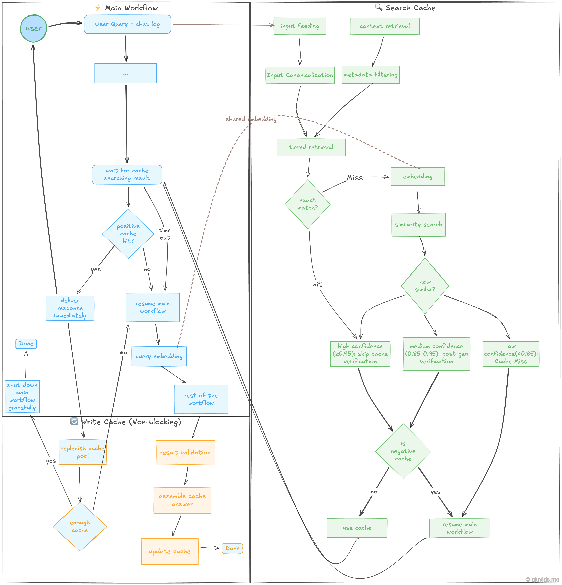
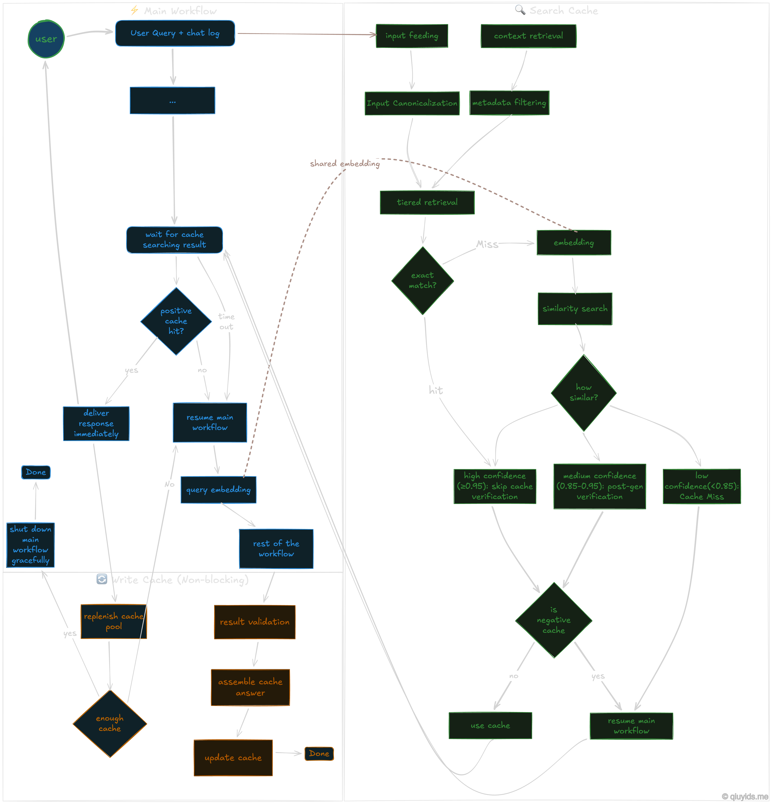

A Practical Architectural Workflow for Semantic Caching#
In the previous post, I discussed the fundamental limitations and trade-offs of semantic caching implementation.
In this post, I think it would be a great idea to provide a workflow diagram incorporating the major points that I previously discussed. Though this might seem like over-engineering for a simple application, these decision points help build a more robust system with semantic caching.
 {kind=link}
{kind=link}
Workflow Breakdown…#
The Main Workflow#
The blue nodes represent the primary path a user’s question takes through the main system.
User Query + Chat Log: The process starts when a user asks a question. The system looks at both the current query and the recent conversation history to understand the full context.
Wait for Cache Search Result: As we already triggered the cache searching workflow, here main workflow will pause until the cache searching workflow to complete or timeout.
Positive Cache Hit?: - Yes: The cached answer is delivered immediately. This is the fastest path. - No / Timeout: If no match is found, or if the cache search takes too long (timeout), the system resumes the main workflow.
Query Embedding: If the cache misses, the query is converted into a vector (a numerical representation of meaning). This vector can be passed from the cache searching workflow to avoid re-calculating if embedded strings are identical.
Searching a Cache#
The green nodes show the logic used to determine if a previous answer is relevant to the new query.
Input Feeding & Canonicalization: The system cleans the input by standardizing the text (e.g., removing extra spaces or converting to lowercase). This ensures that “How is the weather?” and “how is the weather” are treated the same.
Tiered Retrieval & Similarity Search: The search happens in stages. It first looks for an Exact Match (identical text). If that fails, it moves to a Similarity Search using the vector embeddings to find queries with the same meaning.
Confidence Binning: we will evaluates how similar the match is and assigns a score: - High Confidence (≥0.95): The match is so close that the system skips further verification and uses the answer. - Medium Confidence (0.85-0.95): The match is likely, but it requires a post-generation check to ensure it is still accurate. - Low Confidence (<0.85): The match is too weak. This is treated as a “Cache Miss.”
Negative Cache Check: Even if a match is found, the system checks if that specific Q&A pair has been flagged as “bad” or “negative” in the past. If it’s in the negative cache, the system skips it and generates a fresh answer.
Saving a New Cache#
The orange nodes represent the cache saving tasks. These are supposed to be non-blocking, meaning they happen in the background so the user doesn’t have to wait for them.
Result Validation: When the AI generates a brand-new answer, the system checks it for quality and accuracy before saving it.
Assemble & Update Cache: The new query and its validated answer are packaged together and written into the cache database for future use.
Replenish Cache Pool: To prevent the AI from sounding robotic or repetitive, the system can trigger the main workflow in the background. This generates a variety of responses for common questions, ensuring the cache pool stays fresh and diverse.